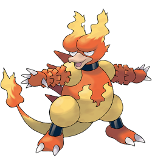
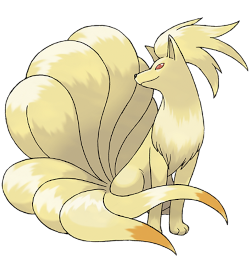
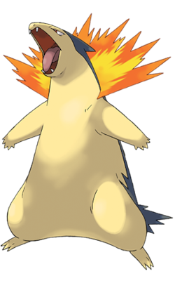
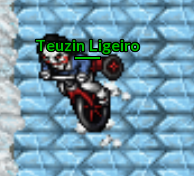

Shiny Heatmor +70 atk 8 PB

Shiny Typhlosion +70 atk 7 (um dia teremos na pb)

Magmar +70 Def 8 PB com addon de diamantes
Ninetales +70 atk 7 PB com addon de pirata
Typhlosion +70 atk 7 PB com o addon feio bagarai
Nosso suporte que usamos para duelos, pra hunt também serve mas é meio ruim:
Magmortar +70 atk 7 PB com addon
Futuramente teremos outros suportes para duelos, como o shiny zard 👍
Famosa donadora de brock quest
Pyroar female +70 Def 7 (lost tape quer um rim na PB)
Shiny Mawile +70 atk 7 Tinker Ball

Por enquanto este é o nosso time volcanic, fique no aguardo para próximas atualizações!

Peido pesa?
~ Teuzin Ligeiro
Clique aqui para voltar a pagina inicial